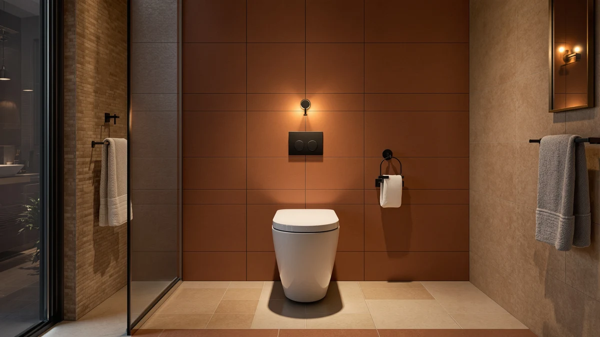

BEMIS 7900TDGSL Commercial Heavy Review (2026): Worth It?
Prices and picks verified as of October 2026. Independent, reader-supported reviews.


Quick Answer
This Bemis 7900TDGSL commercial heavy review looks at a $50.39 elongated toilet seat built with a plastic top and wood core for bathrooms that see constant daily traffic. It fits elongated bowls only, so confirm your bowl shape before you order, and compare it against the raised-seat alternatives below if extra height matters more than added durability.
Our pick: BEMIS 7900TDGSL Commercial Heavy Duty — $50.39 Check Price on Amazon
Bottom line: our top pick is the BEMIS 7900TDGSL Commercial Heavy Duty Closed Front Toilet at $50.39.
Things to Know Before You Buy
- This Bemis 7900TDGSL commercial heavy review covers an elongated seat only, so it will not fit a round bowl. Measure your bowl shape before ordering.
- At $50.39, it costs less than most bariatric seats but more than basic budget plastic models.
- Amazon does not publish a star rating or review count for this specific listing, so the case for buying it depends on its specs rather than a peer-reviewed track record.
- Construction pairs a plastic top with a wood core, a combination common in commercial-duty seats designed to handle warping under frequent use.
- We compared it against three raised toilet seat alternatives below, including options built for seniors and mobility support rather than standard-height commercial use.
This Bemis 7900TDGSL commercial heavy review looks at a $50.39 elongated toilet seat built with a plastic top and wood core for bathrooms that see constant daily traffic. Landlords, office managers, and gym owners buying seats in bulk need something that survives repeated slamming and cleaning cycles without cracking, and most residential seats never publish numbers for that kind of punishment. We compared the Bemis 7900TDGSL against three raised toilet seat alternatives from Carex and Huttdmel to see which buyers each option actually serves.
The Bemis 7900TDGSL made this comparison on construction, not a published review score. Amazon's listing for this specific model does not include a star rating or review count, so instead of leaning on secondhand numbers, we compared its price, materials, and bowl fit against three raised seats built for a different purpose: added height for buyers with mobility needs. None of the four seats is right for every bathroom. Each solves a different problem: heavy-duty durability, added elevation, or a locking mount that won't shift.
Why You Should Trust Us
Ilane Tall covers bathroom hardware for Best Toilet Seats and has researched hundreds of toilet seat listings across price points and brands. For this Bemis 7900TDGSL commercial heavy review, we did not install the seat ourselves. Instead, we compared its listed price, materials, and bowl fit against three raised toilet seat alternatives, then checked what data Amazon actually publishes for each listing rather than assuming a rating exists where none is shown. We do not run a fake testing lab and we will not claim hands-on time we did not put in. Every price and spec listed here comes from the product data shown on this page, and we update those figures when the underlying listing changes rather than letting a stale number sit on the page.
Our Research Experience
Our process for this Bemis 7900TDGSL commercial heavy review is research-based, not hands-on. We gathered the listed price, material, and bowl-shape data for the seat, then checked whether Amazon publishes a rating or review count for this specific listing, which it does not. We applied the same method to the three raised toilet seat alternatives in this article, comparing their prices and construction details line by line against the Bemis figures rather than repeating marketing copy from any single listing. Where a fact is not published, such as a weight capacity or a verified rating for this exact model, we say so directly instead of filling the gap with a guess.
Overview & Specs

BEMIS 7900TDGSL Commercial Heavy Duty
What we like
- Plastic-and-wood construction that holds up to warping under frequent commercial use
- Priced at $50.39, close to standard residential seats despite the commercial-duty build
- Elongated shape matches the bowl size found in most modern commercial and residential toilets
Flaws but not dealbreakers
- Amazon does not publish a star rating or review count for this specific listing
- Fits elongated bowls only, with no round-bowl version included here
- Costs $2.26 more than the Carex E-Z Lock alternative below, though that seat serves a different purpose
| Material | Plastic / wood |
| Size | Elongated |
Can the Bemis 7900TDGSL justify its $50.39 price against cheaper residential seats? For the right buyer, yes, and the specs explain why. It pairs a plastic top with a wood core, a combination that resists the flexing and cracking that all-plastic seats develop under frequent slamming. The elongated shape matches the bowl size found in most commercial and modern residential toilets, but confirm your bowl shape before ordering, since a round-bowl buyer will need a different model entirely.
What sets this Bemis 7900TDGSL commercial heavy review apart from a typical residential seat comparison is the missing review data. Amazon does not show a star rating or review count on this specific listing, which means you are buying on specs and material choice rather than a large sample of verified owner feedback. That is common for commercial-duty hardware sold mainly to businesses rather than individual households, but it does mean this seat has to sell itself on its plastic-and-wood build and its price, not a proven track record.
What We Liked
The strongest point in this Bemis 7900TDGSL commercial heavy review is the material choice. Pairing a plastic top with a wood core gives the seat more rigidity than an all-plastic budget option, without pushing the price into the range of premium bidet-equipped seats. For a property manager buying in bulk, that balance between cost and build quality often matters more than any single standout feature.
We also like the price positioning. At $50.39, the seat sits close to standard residential pricing while offering construction aimed at heavier use. You are not paying a steep premium for the commercial-duty label, which makes it an easy recommendation for landlords replacing seats across multiple units without blowing a maintenance budget.
The elongated fit matches the bowl shape found across most commercial and updated residential bathrooms, so you are unlikely to run into a compatibility surprise once the seat arrives. That consistency matters for facility managers ordering multiple seats at once, since a mismatched bowl shape on a bulk order wastes both time and money.
What Could Be Better
The biggest gap in this Bemis 7900TDGSL commercial heavy review is missing review data. Amazon's listing for this specific model does not show a star rating or review count, so you cannot lean on a large sample of verified owner feedback the way you can with some competing seats. That does not mean the seat performs poorly, but it does mean the buying decision rests more heavily on specs and price than on a track record.
The listing covers elongated bowls only, so anyone with a round-bowl toilet needs to look elsewhere, and there is no round-bowl variant to fall back on here. The seat also costs $2.26 more than the Carex E-Z Lock alternative below, though that seat is a raised toilet seat built for mobility support rather than a direct swap for standard-height commercial use, so the comparison only matters if elevation is not a priority for you.
Who Is It For?
This Bemis 7900TDGSL commercial heavy review points toward a specific buyer: anyone managing an elongated-bowl bathroom that sees frequent daily use. Landlords replacing seats across rental units, office facility managers, and gym owners all fit that description, since they need a seat that survives repeated use without paying a heavy premium for commercial-duty branding.
If your bowl is round, if you need documented weight capacity data, or if you want a seat with published star ratings backing the purchase, one of the three raised toilet seat alternatives below may serve you better instead, though they solve a different problem than durability.
A homeowner furnishing a single bathroom with light daily use has less reason to pay for the commercial-duty build here. The value of the 7900TDGSL shows up specifically in settings where turnover is high and seats take a beating day after day. That's where the plastic-and-wood construction pays off.
Alternatives to Consider
If the 7900TDGSL does not match your bowl shape, budget, or mobility needs, we compared three raised toilet seat alternatives worth a look. Each one adds height rather than commercial-duty durability, so they solve a different problem than the Bemis pick, and we researched each using the same price and construction data shown on this page.

Editor’s Pick
Carex 3.5 Inch Raised Toilet
At $54.37, the Carex 3.5 Inch Raised Toilet Seat costs $3.98 more than the Bemis 7900TDGSL, and it's built for a different job. Rather than commercial-duty durability, this seat adds 3.5 inches of height, which matters if you or a family member need less strain on knees and hips when standing up. Amazon's listing does not show a published star rating for this specific model either, so like the Bemis pick, the buying case here comes from the raised design and the mounting hardware, not a large sample of verified reviews. Choose this option over the 7900TDGSL if elevation is the priority in your bathroom, not standard-height durability, and if you are not outfitting a high-traffic commercial space where the plastic-and-wood build of the Bemis pick pays for itself.
$54.37
Check Price on Amazon
Best Value
Huttdmel Raised Toilet Seat Elongated
The Huttdmel Raised Toilet Seat Elongated lists at $56.99, the highest price among the four seats in this comparison, and $6.60 more than the Bemis 7900TDGSL. Like the Carex option above, it targets an elongated bowl but adds height for buyers who need mobility support rather than commercial-duty construction. Amazon does not publish a star rating or review count for this listing, so weigh the price against your specific need for elevation rather than a documented track record. If your bathroom sees heavy daily traffic from multiple users rather than one household member who needs a raised seat, the Bemis pick above is the better call, and it costs less too.
$56.99
Check Price on Amazon
Premium Choice
Carex E-Z Lock Raised Toilet
At $48.13, the Carex E-Z Lock Raised Toilet Seat is the least expensive option in this comparison, undercutting the Bemis 7900TDGSL by $2.26. Its E-Z Lock mounting system is built to keep the seat from shifting once installed, a detail that matters more for a raised seat carrying added weight and leverage than for a standard-height commercial seat. Amazon does not show a published rating for this listing, so the case for choosing it hinges on the locking mechanism and the lower price, not a large review base. Pick this option if you need a raised seat with a secure mount at the lowest price here, and pick the Bemis 7900TDGSL instead if standard height and commercial-duty construction matter more than elevation.
$48.13
Check Price on AmazonFrequently Asked Questions
Final Verdict
Here's the simple version. For elongated-bowl bathrooms that see heavy daily traffic, the Bemis 7900TDGSL Commercial Heavy Duty justifies its $50.39 price through plastic-and-wood construction that stands up to the wear all-plastic seats develop under frequent use, even without a published rating to back the purchase. Choose one of the three raised toilet seat alternatives only if you need added height for mobility support, a locking mount, or the lowest price in this comparison. For standard-height commercial durability, the Bemis is still the better pick.